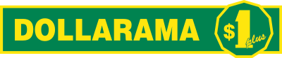

대표 로고대표 브랜드 마크
대표 로고대표 브랜드 마크달러라마 Dollarama
달러라마(Dollarama)는 캐나다 최대의 1~5달러 균일가 저가 소매 체인이다.
최종 업데이트
달러라마는 어떤 브랜드인가
달러라마는 캐나다 전역을 장악한 최대 규모의 균일가·저가 잡화 소매 체인이다. 1992년 래리 로시가 퀘벡주 마탄의 한 쇼핑센터에 첫 매장을 연 것이 출발점이며, 2009년 토론토증권거래소 상장과 2022년 최고 가격대를 5캐나다달러까지 끌어올린 결정이 두 차례 큰 전환점이 되었다.
회계연도 2025년 기준 매출은 약 64억 캐나다달러, 캐나다 내 매장 수는 1,616개에 이르며 자국 균일가 시장의 약 60%를 점유한다.
달러라마는 어떻게 봐야 할까
달러라마의 핵심 차별점은 '균일가'라는 인상을 유지하면서도 1캐나다달러부터 5캐나다달러까지 여러 단계로 가격을 촘촘히 배치한 복수 가격대 구조다. 소비자는 여전히 저렴한 곳이라 인식하지만, 기업은 단계별 윗선 판매로 마진을 끌어올린다.
품목의 약 65%를 자체 상표(private label)로 채워 해외 제조사에서 직매입하는 방식이 원가 우위의 뿌리다. 시장 함의는 분명하다.
물가 상승기에 월마트·코스트코·대형 식료품 체인에서 내려온 중산층까지 흡수해, 가구 소득과 무관하게 캐나다 가구의 95~96%가 최근 60일 내 방문할 만큼 보편적 채널이 되었다. 한국 독자에게는 다이소를 떠올리면 이해가 빠르다.
다이소가 1,000~5,000원의 다단계 가격으로 생활밀착형 잡화 시장을 장악한 구도와 거의 같으나, 달러라마는 여기에 증시 상장과 중남미·호주로 향하는 자본 기반 해외 확장을 더했다는 점에서 한발 더 나아가 있다.
달러라마는 어떻게 시작되고 성장했나
이야기의 뿌리는 1910년으로 거슬러 올라간다. 레바논 이민자 살림 라시(이후 로시로 표기)가 몬트리올에서 균일가 점포를 연 것이 가문 소매업의 시작이었고, 아들 조지가 1937년 사업을 이어받아 1973년까지 키웠다.
손자 래리 로시가 가업을 물려받았을 때 점포는 20여 개에 불과했고, 회사는 'S. 로시'라는 이름으로 운영되고 있었다.
첫 전환점은 1992년이다. 래리 로시가 퀘벡주 마탄에 모든 상품을 1캐나다달러에 파는 첫 달러라마 매장을 열면서, 균일가 전문 포맷이 가문 매출의 중심으로 빠르게 이동했다.
1990년대 말 이후 기존 S. 로시 점포는 대부분 달러라마로 전환되거나 폐점하며 브랜드가 일원화됐다.
두 번째 전환점은 자본 구조의 변화로, 2004년 사모펀드 베인캐피털이 지분을 인수해 성장 자금을 댔고 2009년 10월 주당 17.50캐나다달러로 토론토증권거래소에 상장하며 약 3억 캐나다달러를 조달했다. 가격 정책도 단계적으로 풀렸다.
2009년 2캐나다달러, 2012년 3캐나다달러, 2016년 4캐나다달러, 2022년 5캐나다달러로 상한을 차례로 올리며 상품 폭을 넓혔고, 이후 중남미와 호주로 영토를 확장했다.
달러라마의 브랜드 아이덴티티는 무엇인가
달러라마가 내세우는 가치는 '예측 가능한 저가'다. 어느 매장에서나 비슷한 진열과 가격 단계를 만나는 일관성이 신뢰의 토대다.
비주얼 아이덴티티는 청록과 초록, 골드 톤을 축으로 한 색 구성과 군더더기 없는 산세리프 글자체로 정돈돼, 작은 앱 아이콘부터 대형 매장 간판까지 동일하게 읽히도록 설계됐다. 잡다해 보일 수 있는 다품종 구색을 오히려 활기와 발견의 즐거움으로 풀어내는 것이 브랜드 화법이다.
타깃은 특정 계층에 갇히지 않는다. 알뜰 소비자뿐 아니라 물가 부담에 지출을 조정하는 중산층 가구까지 폭넓게 끌어안으며, 소득 구간과 무관한 보편적 생활 매장으로 자리 잡았다.
메시지의 핵심은 과장 없는 실용성과 접근성이다.
달러라마의 대표 제품과 서비스는 무엇인가
취급 구색은 세 축으로 나뉜다. 회계 기준상 일반 잡화가 약 40%, 식음료 등 소비재가 약 45%, 계절 상품이 약 15%를 차지한다.
주방·청소·문구·완구·파티용품·스낵·캔디부터 명절·시즌 한정 품목까지 가정 필수재 전반을 다룬다. 상품의 약 65%가 자체 상표로, 해외 제조사 직매입 구조가 가격 경쟁력의 핵심이다.
판매 채널은 캐나다 전역의 오프라인 직영 매장망이 중심이다.
달러라마는 지금 어떤 상태인가
본사는 캐나다 퀘벡주 마운트로열에 있다. 지배구조는 토론토증권거래소 상장사(종목코드 DOL)이며, 베인캐피털이 키운 뒤 2009년 기업공개로 공개기업이 되었다.
현 경영은 창업자 래리 로시의 아들 닐 로시가 이끈다. 사업 국가는 캐나다(직영), 중남미(지분 약 60.1%를 보유한 달러시티), 그리고 2025년 인수 완료한 호주(더 리젝트 숍)로 확장됐다.
달러시티는 멕시코 진출을 추진해 2026년 첫 시범 매장을 계획 중이고, 더 리젝트 숍은 약 2억 5,900만 호주달러에 인수돼 390여 개 매장을 2034년까지 약 700개로 늘리는 목표가 제시됐다. 회계연도 2025년(2025년 2월 종료) 매출은 약 64억 캐나다달러로 전년 대비 9.3% 증가했고, 같은 기간 65개 순증으로 캐나다 매장은 1,616개를 기록했다.
2025년 11월 기준 캐나다 매장은 1,684개로 더 늘었다. 그 밖의 세부 수치는 미공개.
달러라마 로고는 어떻게 변해왔나
대표 로고대표 브랜드 마크
대표 로고 1보관 이미지 1자주 묻는 질문
달러라마는 어느 나라 브랜드인가요?
달러라마는 캐나다의 리테일·커머스 브랜드입니다.
달러라마는 언제 설립되었나요?
달러라마는 1992년 설립되었습니다.
달러라마의 브랜드 아이덴티티는 무엇인가요?
달러라마가 내세우는 가치는 '예측 가능한 저가'다.
달러라마의 본사는 어디에 있나요?
본사는 캐나다
달러라마의 창업자는 누구인가요?
달러라마의 창업자는 Larry Rossy입니다(위키데이터 기준).
달러라마의 공식 웹사이트는 어디인가요?
달러라마의 공식 웹사이트는 https://www.dollarama.com/ 입니다.
출처와 검증
달러라마 관련 참고: 공식 웹사이트 · 위키데이터 Q3033947 · 영어 위키백과. 브랜드명은 한글과 원어를 함께 표기하되 데이터에 없는 표기는 만들지 않습니다. 기원 국가·설립연도는 검수된 정의문에서 확인된 값을 우선하고, 없을 때만 공식 웹사이트 URL이 일치하는 위키데이터 개체의 값을 씁니다. 위키데이터 값은 2026-09-07 기준입니다.